My Zini Digital ERP mein Payments & Shortcuts Hub (Cashier Terminal) Kaise Use Karein? (Complete Hinglish Guide)
School ke fee counter par sabse zyada bheed mahine ki 1 se 15 tarikh ke beech hoti hai — koi parent monthly tuition fee dene aata hai, koi exam ya admit card fee jama karta hai, koi sibling family bill check karwata hai, toh koi teacher salary voucher maangta hai. Aise mein cashier ko baar-baar alag-alag pages open karne se bachane ke liye My Zini Digital ERP mein ek high-speed Payments & Shortcuts Hub (Cashier Terminal) (/shortcut) banaya gaya hai. Is Hinglish guide mein humne live portal par iske sabhi 5 tabs, Class/Roll Fetch, 5 Outstanding Categories, Custom Remarks, Staff Salary, Family Billing aur Bulk Monthly Fees ko test karke poora walkthrough तैयार kiya hai.
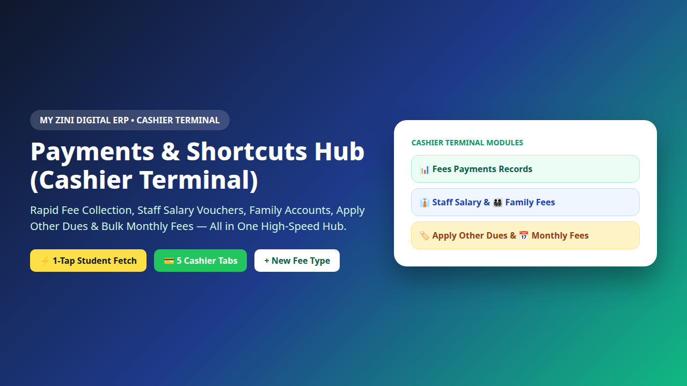
⚡ TL;DR — Quick Summary (AI & Reader Snapshot)
- Route: Sidebar mein
Payments(https://myzini.digitalerp.shop/shortcut) — jiske andar 5 sub-links directly sidebar mein bhi dikhte hain. - 5 Power Tabs:
📊 Fees Payments Records,👔 Staff Salary (18),👨👩👧👦 Family Fees Manage (5),🏷️ Apply Other Dues (9), aur📅 Apply Monthly Fees++ New Fee Type. - 1-Tap Student Fetch:
STEP 1: CHOOSE CLASS *(27 classes with fee labels) yaOR ROLL NO+⚡ Fetch. - 5 Outstanding Categories:
Academic,Other Fees(Pay Amount, Next Due Date, Custom Note/Remarks),Transport,Hostel, aurPrevious Year. - Bulk Billing Engine: Multiple classes select karke ek click mein Exam/Uniform/Books dues ya Monthly Academic Fees (strict duplicate prevention ke saath) generate karein.
1. Payments & Shortcuts Hub Overview aur 1-Tap Student Selection
Jaise hi aap sidebar se Payments par click karte hain, aapke saamne Payments & Shortcuts Hub — Cashier Terminal khulta hai jiska subtitle hai: "My Zini solutions school • Rapid Billing, Salary Vouchers, and Family Accounts".
Default tab 📊 Fees Payments Records par aapko Select Student panel milta hai jahan STEP 1: CHOOSE CLASS * dropdown mein sabhi 27 classes unki monthly tuition fee ke saath dikhti hain (jaise Class 1 (Fee: ₹800), Class 10 (Fee: ₹1800), Play (Fee: ₹6500)). Agar aapko student ka roll number pata hai, toh aap seedha OR ROLL NO box mein number (e.g. 15) dalkar ⚡ Fetch daba sakte hain!
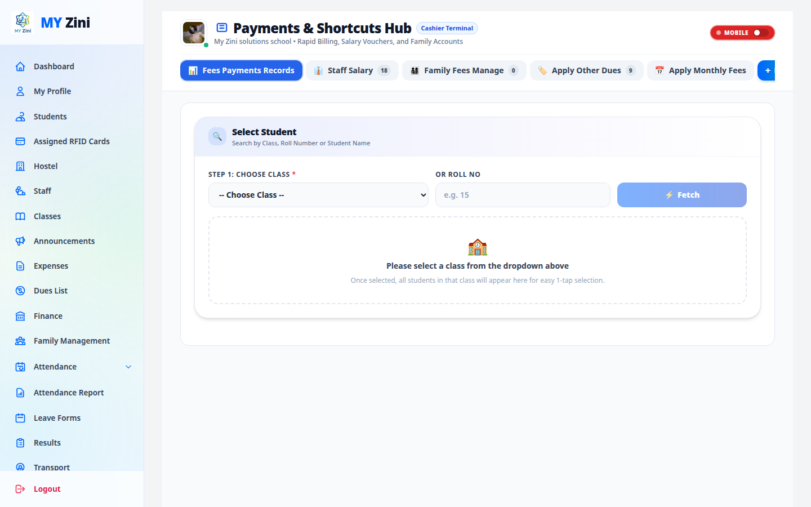
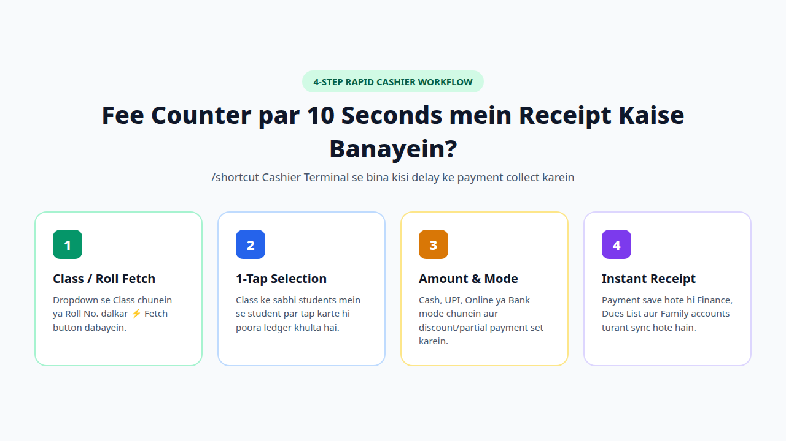
2. Student Cashier Terminal: 5 Outstanding Categories, Partial Pay & Remarks
Jab humne live portal par Class 1 select karke Aarav Raj (Roll: 1) par click kiya, toh turant poora Student Fee Terminal khul gaya! Isme aapko neeche diye gaye exact controls milte hain:
- Student Profile Header: Name (
Aarav Raj), Class (Class 1), Roll No (1), Mobile (9801234801) + direct💬WhatsApp icon aur🔄 Change Studentbutton. - Live Counters:
TOTAL OUTSTANDING: ₹2,050aurPAYING NOW: ₹0(jaise-jaise aap items select karte hain, Paying Now automatically badhta hai). - 5 OUTSTANDING CATEGORIES:
Academic(₹500 • 1 Month Due),Other Fees(₹1,550 • 5 Items Due),Transport(₹0 • Bus / Van Fee),Hostel(₹0 • Room & Mess), aurPrevious Year(₹0 • Opening Arrears). - Academic Monthly Tuition Fees: Har pending month (e.g. December • Due: ₹500) ke aage 1-click
Pay ₹500button ya custom amount box milta hai — "Amounts are strictly capped to each month's remaining dues." - Other / Custom Fees: Admit Card, Exam ya Books jaise har item par
PAY AMOUNT (MAX ₹150),NEXT DUE DATE(partial payment ke liye!), aurCUSTOM NOTE / REMARKSfield milta hai!
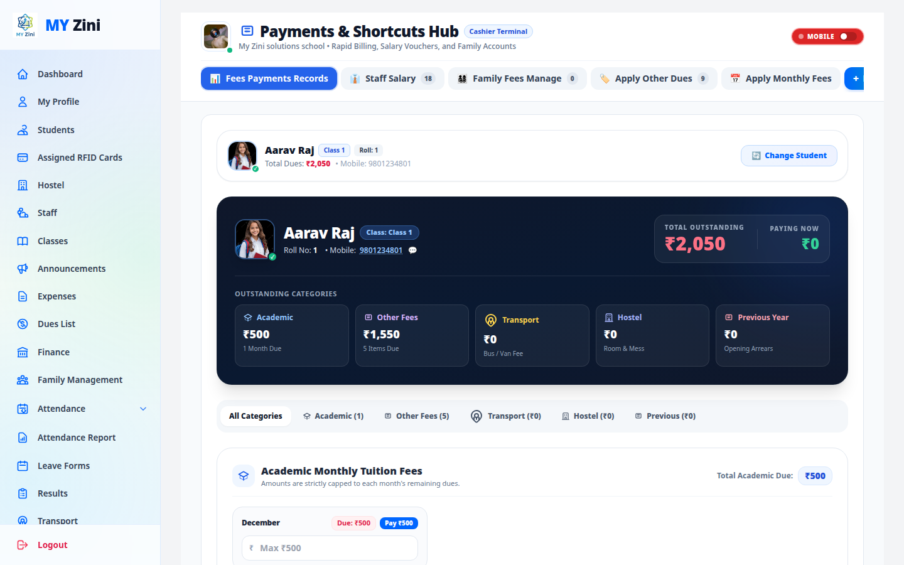
3. Staff Salary (18) aur Family Fees Manage (5) Shortcuts
Cashier Terminal sirf students ki fees lene tak seemit nahi hai — iske agle do tabs school accountant ke daily kaam ko aur bhi aasan bana dete hain:
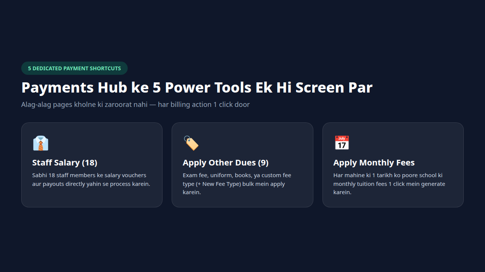
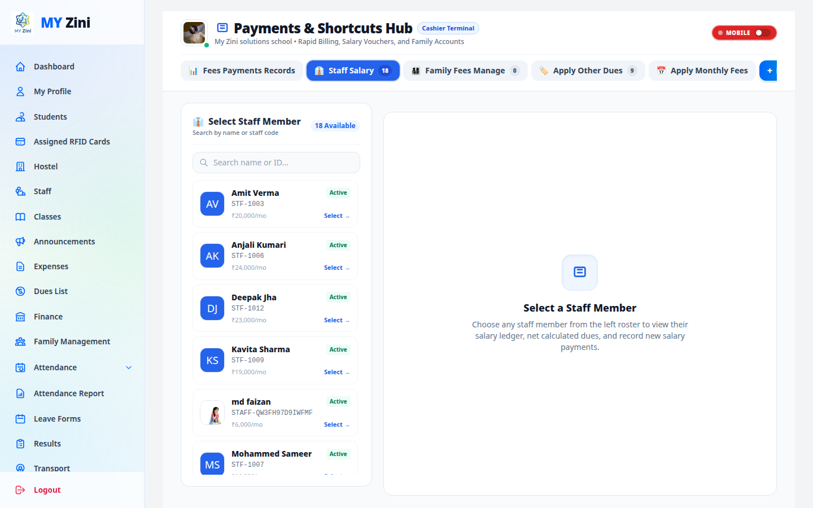
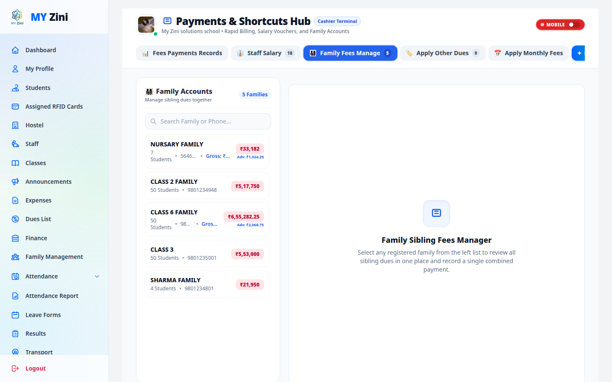
4. Apply Other Dues (+ New Fee Type) aur Apply Monthly Fees (Duplicate Prevention)
Har mahine ki shuruwat mein ya exam/annual function ke waqt poore school par ek saath fees lagane ke liye aapko do bulk automation tabs milte hain:
- 🏷️ Apply Other Dues (9) — Bulk Dues Application: Yahan aap + Create New Fee Type se naya fee head (jaise Exam Fee, Books, Uniform, Sports, Picnic) bana sakte hain,
STEP 1: Select Target ClassesmeinAllya multiple classes select kar sakte hain, base amount aur discounts customize karke sabhi students par official dues push kar sakte hain. - 📅 Apply Monthly Fees — Academic Monthly Fees Application: Yahan aap
TARGET MONTH(e.g.November 2026) chunn kar multiple classes select karte hain. System har class ki configured fee (jaise Class 1 = ₹800, Class 5 = ₹1000) aur student profile discounts verify karke strict duplicate prevention ke saath monthly fee ledger mein add kar deta hai!
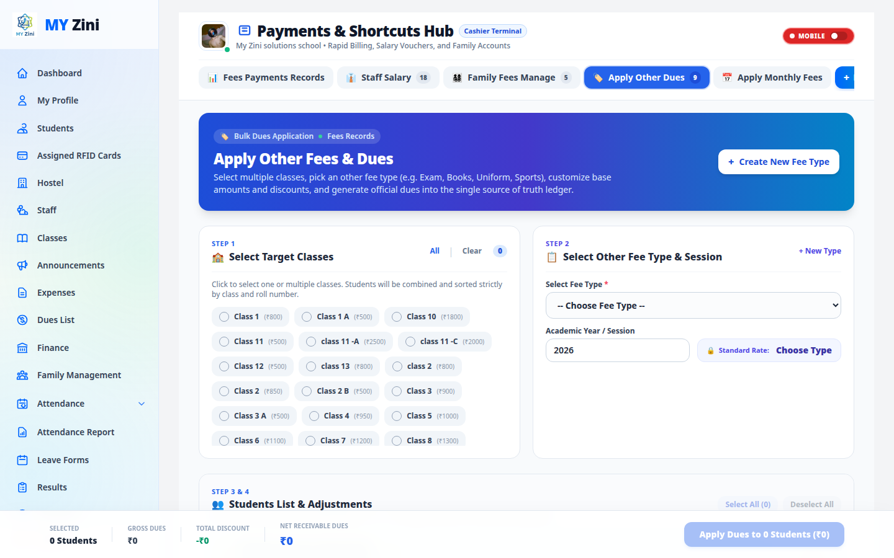
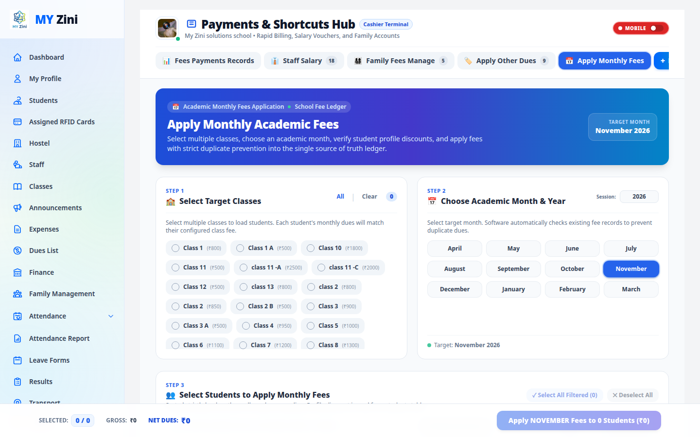
5. Mobile Cashier Mode aur Manual Receipt Book se Tulna
Header mein aapko dedicated MOBILE badge aur responsive layout milta hai. Chahe aap office counter ke desktop par hon ya admission desk par tablet/phone (390px) se fee le rahe hon, har tab aur button cleanly adjust hota hai.
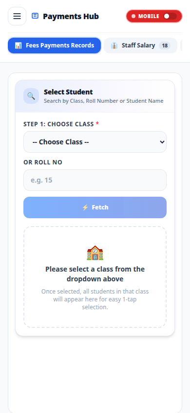
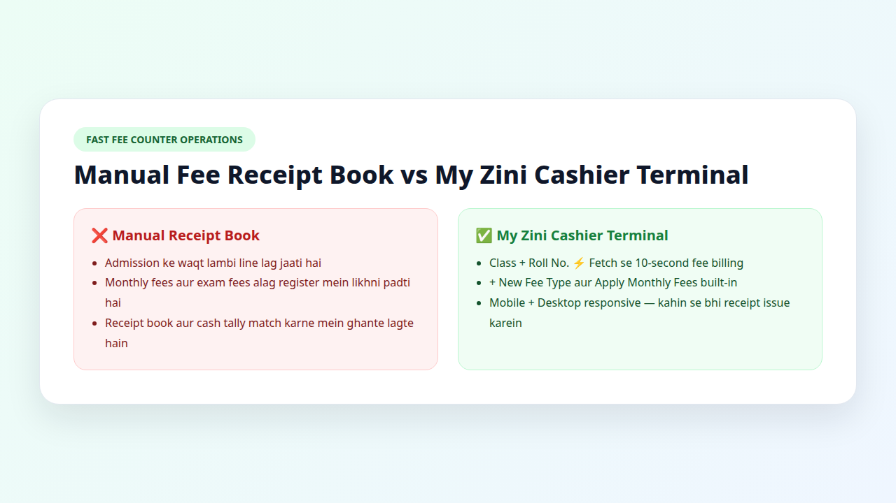
Quick Reference Table: /shortcut Cashier Terminal Cheat Sheet
| Tab / Tool | Sidebar Shortcut | Primary Kaam |
|---|---|---|
| 📊 Fees Payments Records | • Fees Payments Records | Class/Roll Fetch se student ki 5 categories ki fees collect karna |
| 👔 Staff Salary | • Staff Salary | Sabhi staff members ke salary vouchers aur payouts process karna |
| 👨👩👧👦 Family Fees Manage | • Family Fees Manage | Linked siblings ki combined family fees ek saath receive karna |
| 🏷️ Apply Other Dues | • Apply Other Dues | Exam, Books, Uniform, Sports ya Custom Fee bulk mein apply karna |
| 📅 Apply Monthly Fees | • Apply Monthly Fees | Target month ki tuition fees duplicate prevention ke saath lagana |
Frequently Asked Questions (FAQs)
1. Agar galti se kisi class par "Apply Monthly Fees" do baar click ho jaaye toh kya double fee lag jaayegi?
Bilkul nahi! Apply Monthly Fees tab mein strict duplicate prevention engine built-in hai. System har student ke ledger ko check karta hai aur agar us Target Month (e.g. November 2026) ki fee pehle se lag chuki hai, toh use skip kar deta hai taaki kisi student par double billing na ho.
2. Agar koi parent ₹150 ki Admit Card fee mein se abhi ₹100 de aur ₹50 baad mein dene ko bole toh kaise entry karein?
Other / Custom Fees section mein aapko har item ke neeche PAY AMOUNT (MAX ₹150), NEXT DUE DATE, aur CUSTOM NOTE / REMARKS fields milte hain. Aap Pay Amount mein 100 daalein, Next Due Date select karein aur note mein "₹50 balance next week" likhkar save kar dein.
3. "+ New Fee Type" aur "+ Create New Fee Type" button se kya hota hai?
Is button se aap apne school ki zaroorat ke hisab se koi bhi nayi fee category create kar sakte hain — jaise Annual Function Fee, Board Registration Fee, Lab Fee, ya Winter Uniform — aur phir use Apply Other Dues se ek ya sabhi classes par apply kar sakte hain.
4. Roll Number se directly student kaise fetch karein?
Class select karne ke baad OR ROLL NO box mein student ka roll number (jaise 1 ya 15) type karein aur ⚡ Fetch button dabayein. Bina lambi list scroll kiye turant wahi student cashier screen par open ho jaata hai.
5. "PAYING NOW" counter kaise kaam karta hai?
Jab aap kisi student ka ledger kholte hain, toh TOTAL OUTSTANDING unka total pending balance dikhata hai. Jaise-jaise aap Pay ₹500 ya custom amount select karte hain, PAYING NOW live update hokar batata hai ki abhi counter par parent se kul kitna paisa lena hai.
6. Kya Cashier Terminal se payment lene par Finance (/finance) aur Dues List (/dues-list) turant update hoti hai?
Haan! My Zini Digital ERP ek Single Source of Truth ledger par chalta hai. Cashier Terminal par payment save hote hi Finance Command Center mein Today's Inflow badh jaata hai aur Dues List se student ka due ghat jaata hai.
7. Student ke paas agar Previous Year ka balance ho toh woh kahan dikhta hai?
5 Outstanding Categories mein 5th card Previous Year (Opening Arrears) hota hai. Aap Previous filter pill par click karke pichhle session ke bache hue paise bhi yahin se collect kar sakte hain.
8. Sidebar mein "Payments" ke neeche 5 bullet links kyun dikhte hain?
Taaki aap school ke kisi bhi page par hon — chahe Attendance par ya Students par — aap ek click mein directly • Staff Salary, • Apply Monthly Fees, ya • Fees Payments Records par jump kar sakein.
9. Apne school ke liye My Zini Digital ERP kaise shuru karein?
Aap Digital ERP Registration Form par jaakar sirf ₹100 Registration Fee ke saath apna school register kar sakte hain aur aaj hi Cashier Terminal shuru kar sakte hain.
10. Kya fee jama karne ke baad student ke parent ko WhatsApp par message bhej sakte hain?
Haan! Student profile header mein unke mobile number ke bagal mein 💬 WhatsApp button diya gaya hai jisse aap turant parent ko confirmation ya receipt update bhej sakte hain.
11. "Change Student" button kis kaam aata hai?
Ek parent ki fee collect karne ke baad jab agla parent counter par aaye, toh page reload kiye bina sirf 🔄 Change Student button dabakar aap turant agle student ko select kar sakte hain.
12. Kya Generator Tools se 4-in-1 Fees Dues Bill bhi isi ledger se linked hai?
Haan bilkul! Jab aap Apply Monthly Fees ya Apply Other Dues se dues generate karte hain, toh wahi exact dues Generator Tools (/generator-tools) ke 4-in-1 Fees Dues Bill mein QR code ke saath print hote hain.
13. "All | Clear" buttons Apply Monthly Fees mein kaise madad karte hain?
Agar aapko poore school ki sabhi 27 classes par ek saath monthly fee lagani hai, toh ek-ek class par click karne ke bajaye sirf All button dabayein — saari classes ek second mein select ho jaayengi!
14. Kya Graduation ya custom classes (jinmein fee ₹0 set hai) un par bhi Apply Monthly Fees chalta hai?
System har class ki configured fee dikhata hai (e.g. Graduation (₹0), Class 1 (₹800)). Aap chahein toh sirf paid classes select karke monthly fee generate kar sakte hain.
15. "Staff Salary (18)" tab aur "/staff" page ke salary payout mein kya antar hai?
/staff page par aap naya staff add karte hain aur unki profile, daily absent fine aur 1-hour late fine configure karte hain. Wahin Payments Hub ke 👔 Staff Salary (18) tab mein aapka cashier bina poore HR directory mein ghoome seedha active 18 staff members ke salary vouchers aur payouts 1 click mein settle kar sakta hai.
16. "Family Fees Manage (5)" tab ka use kab karna chahiye?
Jab kisi parivaar ke 2, 3 ya usse zyada bachche ek saath fee dene aayein, toh har bachche ko alag-alag fetch karne ke bajaye seedha 👨👩👧👦 Family Fees Manage tab kholein. Yahan se aap poore parivaar (jaise Sharma Family) ka composite net due ek saath collect kar sakte hain.
17. "All Categories", "Academic (1)", "Other Fees (5)" pills cashier ki speed kaise badhati hain?
Agar kisi student par 10 alag-alag dues pending hon — jaise 2 mahine ki tuition fee, 5 custom fees (Admit card, books, uniform), aur transport fee — toh parent agar sirf Admit card ki fee dene aaye hain, toh cashier turant Other Fees (5) pill par click karke sirf wahi items screen par dekh sakte hain.
18. Kya Apply Other Dues mein har class ke liye alag discount ya custom amount diya ja sakta hai?
Haan! Bulk Dues Application mein aap multiple classes select karne ke baad base amount set kar sakte hain aur zaroorat padne par student profile ke discount rules ke saath official dues ledger mein push kar sakte hain.
19. Kya Cashier Terminal par kiye gaye har payment ka audit log save hota hai?
Bilkul! Har transaction exact timestamp, amount, student roll number, payment remarks aur next due date ke saath cloud ledger mein save hota hai. Din ke end mein Principal Finance Command Center (/finance) mein Today's Inflow dekh kar cash drawer match kar sakte hain.
20. Agar kisi student ko admission ke time concession mila ho toh kya Apply Monthly Fees uska dhyan rakhta hai?
Haan! Apply Monthly Fees tab clearly likhta hai: "Select multiple classes, choose an academic month, verify student profile discounts, and apply fees with strict duplicate prevention into the single source of truth ledger." Yani system har student ka configured discount automatically check karta hai.
21. Kya Transport aur Hostel fees bhi isi Cashier Terminal se jama hoti hain?
Haan bilkul! Student fetch karte hi aapko 5 categories dikhti hain: Academic, Other Fees, Transport (Bus / Van Fee), Hostel (Room & Mess), aur Previous Year. Ek hi counter par parent ek hi baar mein sabhi 5 categories ki fees jama kar sakte hain.
22. Kya "Academic Monthly Tuition Fees" mein kisi mahine ki due se zyada amount enter kiya ja sakta hai?
Nahi! System safety ke liye likhta hai: "Amounts are strictly capped to each month's remaining dues." Isse cashier galti se kabhi bhi ₹500 ki jagah ₹5000 enter nahi kar paate aur over-billing ki galti 0% ho jaati hai.
23. Kya Cashier Terminal ka data Data Center (/data-center) se export kiya ja sakta hai?
Haan, saare fee collections aur payment records Data Center (/data-center) aur /finance ke saath synced rehte hain, jahan se aap Excel, CSV ya JSON backup kabhi bhi download kar sakte hain.
24. Kya ek hi din mein 200+ parents ki fees bina slow hue collect ki ja sakti hai?
Bilkul! Cashier Terminal ko high-speed counter operations ke liye design kiya gaya hai — OR ROLL NO + ⚡ Fetch aur 🔄 Change Student se aap har minute 3 se 5 parents ki fee billing easily complete kar sakte hain.
Real School Scenarios: Payments & Shortcuts Hub ka Daily Use
1. Har Mahine ki 1 Tarikh ko Auto Billing
Accountant 📅 Apply Monthly Fees kholkar Target Month select karte hain aur All classes chunn kar 1 minute mein poore school ki monthly tuition fees generate kar dete hain.
2. Exam Time par Admit Card / Exam Fee
Exams se pehle 🏷️ Apply Other Dues se sabhi classes par ₹150 Exam/Admit Card fee apply ki jaati hai, aur counter par ⚡ Fetch se 10 seconds mein collect hoti hai.
3. Partial Payment + Next Due Date Tracking
Agar parent aadhi fee abhi aur aadhi agle hafte dein, toh PAY AMOUNT aur NEXT DUE DATE set karne se follow-up 100% accurate rehta hai.
4. Staff Salary Day Payouts
Mahine ke end mein 👔 Staff Salary (18) tab se sabhi teachers aur staff ke salary vouchers ek hi terminal se clear kiye jaate hain.
Pro Tip: Fee counter par hamesha Class + Roll No. ⚡ Fetch aur 🔄 Change Student shortcut use karein — isse peak admission aur exam days mein bhi parent waiting time 70% tak kam ho jaata hai.